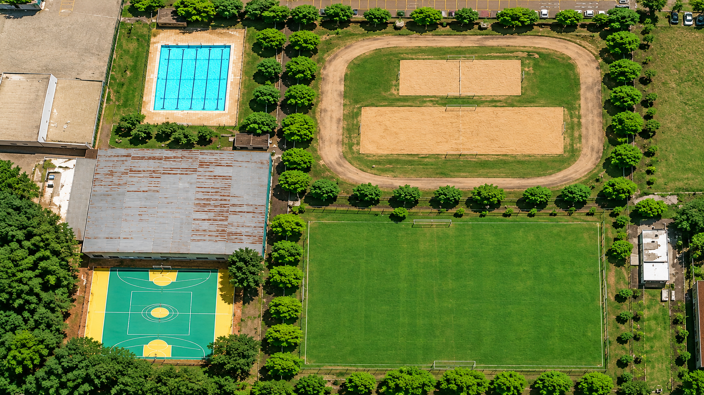

Campo
Área aberta para futebol e outras atividades de campo.
- Aceita as modalidades que cabem no campo.
- Equipamentos: pode usar os da faculdade.
- Professor supervisor: não é necessário.
Agende a quadra poliesportiva, o campo, a quadra de areia ou a piscina da FAMINAS. O pedido é feito por e-mail institucional, exclusivamente às segundas-feiras, até às 13h30.
Os pedidos são feitos por e-mail, só às segundas-feiras, até às 13h30. Veja os espaços, as regras e o que informar na solicitação.
Veja o complexo de cima e clique em uma área para descobrir o que é e como usar.

Vista aérea do complexo esportivo.
Clique em uma área do mapa para ver o que ela é e como usar.
Área aberta para futebol e outras atividades de campo.
Quadra para várias modalidades, como futsal, vôlei, basquete e handebol.
Quadra de piso de areia para modalidades como vôlei de praia, futevôlei e beach tennis.
Espaço para natação e atividades aquáticas.
Todas as modalidades que cabem no espaço escolhido podem ser agendadas.

Futsal, vôlei, basquete, handebol e outras modalidades de quadra.

Futebol e outras atividades de campo aberto.

Vôlei de praia, futevôlei, beach tennis e outras modalidades de areia.

Natação e atividades aquáticas.
Salva-vidas obrigatório durante toda a atividade.
Quatro etapas, do pedido até a resposta:
Nome completo e matrícula de todos que vão participar. Se houver equipe técnica ou auxiliares, nome completo e telefone de cada um.
Exclusivamente às segundas-feiras, até às 13h30. Depois desse horário, não são feitas reservas. O contato está no fim desta página.
Espaço, modalidade e data pretendida. Lembre que, na piscina, o salva-vidas é obrigatório durante toda a atividade. Atléticas enviam também a documentação de vínculo.
Os horários podem mudar e podem não estar disponíveis na hora da resposta, pois também são oferecidos a outros interessados. Peça com antecedência.
Estes são os dados que o setor de extensão pede no momento do pedido.
Equipe do curso de Análise e Desenvolvimento de Sistemas (ADS), na disciplina de Engenharia de Software.